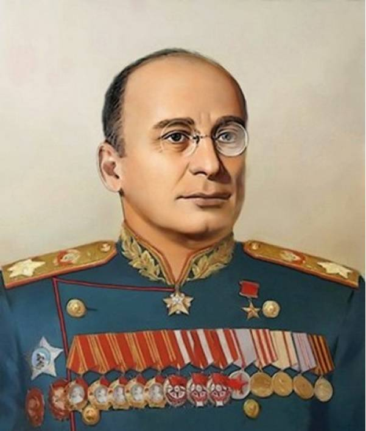

Лаврентий Берия

Лаврентий Павлович Берия (@Scoundrel) (груз. ლავრენტი პავლეს ძე ბერია, Лавренти Павлес дзе Бериа; 17 (29) марта 1899 года, Мерхеули, Кутаисская губерния, Российская империя — 23 декабря 1953 года, Москва) — российский революционер, советский государственный и партийный деятель, генеральный комиссар госбезопасности (1941), Маршал Советского Союза (1945), Герой Социалистического Труда (1943), лишённый этих званий в 1953 году. Имба машина клана но тупой .
